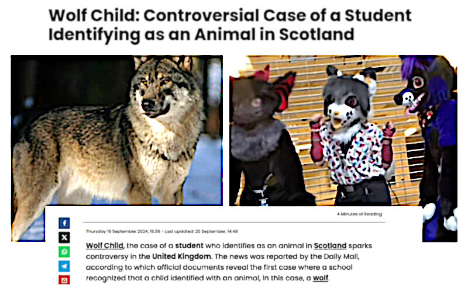

I wish to be a wolf, accept it
Published Sep 22, 2024 - origin LinkedIn article
This article has been written by some texts taken from previous posts and comments that I wrote on LinkedIn. The frst part is in English while the second is in Italian, like their originals.
Questo articolo è stato scritto a partire da post e commenti precedenti che ho scritto su LinkedIn. La prima parte è in inglese mentre la seconda è in italiano, come gli originali.
Cosplaying & role playing in real life
It has a name: cosplay. The "play" part means that it is just a play. It is a play when a kid cross-gender dressing, or animal-dressing, or cartoon-dressing and s/he pretend to play - play as in a theater - the role of that subject.
We play roles - diferent roles - all the time, along all our life. We play as teacher,mother, father, friend, lover, boss, etc. and there is nothing wrong in this.
The craziness starts when we forget that we are NOT the role we play. In that case anything or anyone that jeopardizes our role (and the biases or beliefs related to it, including why we should do that) jeopardizes also what we are that makes everything harder because there is no a second point of view and every relativism is gone.
However, craziness starts also when we realize that we are NOT the role we play AND that role is about being female or male. Because we can easily change our clothes or our behavior or sexual orientation even despite this change is hampered by social restrictions, laws or inner belief.
Hence, all of these obstacles are virtual in the sense that they are arbitrarily enforced by someone else. Instead, changing the biological sex kind - apart from some rare cases in which there is a biological non-binary condition at the birth - is hard and never reaches a complete change.
Hence we have to learn to separate reality constraints from social conventions.The second can be challenged and it is sane that they are challenged by every new generation because the world changes and the society should adapt to the new world while the frst are extremely hard to challenge.
It took us many thousands year before being able to fy despite the fact that Icarus legend shown that our civilization developed the dream of fying quite early, more or less back in time at the time of Jesus birth, at least or even before.
Nothing is impossible but consider that it took 19 centuries from the dream of fying and the frst human fight plus another century and many deaths to reach the current level of commercial airlines.
This is the diference between changing an opinion (about me myself, for example) and changing our relationship with reality (accomplish the dream of fying).
For 19 centuries people looks at the birds in the sky and changed their opinion accepting that humans cannot fy. Included Leonardo Da Vinci which more than anyone else dreamed and drawn about the human fight but technology was not advanced enough for even a optimistic but safe try.
After 19 centuries of dreaming, a couple of crazy-for-all-the-others brothers decided that technology was advanced enough to bring in the history the frst human fight. They were (W)right. Inspired by their work and accomplishment,other people took just a century to bring in our lives the commercial fights.
Then
Ryanair got into the scene and made fying as cheap as also the poor people started to take a fight for travelling as tourists. Because before Ryanair,commercial fights were for business or wealthy people.
Learning the diference between reality and opinions is a fundamental part of our education as better as it comes in early years of our life. Which is the reason because cosplaying or role-playing are really educative games.
Unless that playing develops into an ideological silly expectation of being possible to easily change the reality at our own will, which is nothing else than believing in magic and witch-crafting.
Because technology and science can be seen as a kind of magic or witch-crafting due to their achievements, but they are not at all.
And this becomes pretty clear once you get in consideration that science and technology are the product of more than 25 centuries of systematic and methodological knowledge evolution.
And yes, your decisions about this topic will have consequences in the real world and in your life also. Those consequences will be hard to change, as well as any other part of the real world and reality.
This is the main reason because kids should learn as early as possible the diference between opinions and reality. Unless, we like that they will face hard-to-change consequences, and most probably negative when not even impairing or lethal also.
Our society abstracted itself away from reality along the centuries but reality did not ceased to exists. The technological tricks and well-organisation emancipated us from a harsh reality, in some areas and for some degrees, but not completely yet.
Moreover, technology and organisation are not granted. They require a HUGE dedication, and yet they remains relatively fragile achievements, and sometimes we discover that are much more fragile than we expected.
Meaning and etymology
Knowing the exact meaning of the words we are using, and where their come from, helps us to develop a fne-grained functional language and therefore a more aware way thinking.
Cosplay: a portmanteau of "costume play", is an activity and performance art in which participants called cosplayers wear costumes and fashion accessories to represent a specific character. It is from Japanese portmanteau of the English terms costume and play. The term was coined by Nobuyuki Takahashi of Studio Hard after he attended the 1984 World Science Fiction Convention (Worldcon) in Los Angeles and saw costumed fans, which he later wrote about in an article for the Japanese magazine My Anime. Takahashi decided to coin a new word rather than use the existing translation of the English term "masquerade" because that translates into Japanese as "an aristocratic costume party", which did not match his experience of the Worldcon. The coinage reflects a common Japanese method of abbreviation in which the first two moras of a pair of words are used to form an independent compound: 'costume' becomes kosu (コス) and 'play' becomes pure (プレ). - Wikipedia
Cosplays: the activity or practice of dressing up as a character from a work of fction (such as a comic book, video game, or television show). Etymology: it comes after Japanese kosupure, short for kosuchūmupurē, borrowed from English costume + (role)play . The noun is from 1993, while the verb is from 2002. - Merriam-Webster Dictionary
Cosplay: originally in Japan, the action or pastime of dressing up in costume, esp. as a character from anime, manga, or video games; performances involving people dressed in this way. - Oxford English Dictionary
Cosplay: [noun] the hobby of dressing as and pretending to be a character from a flm,TV programme, comic book, etc. [verb] to dress as and pretend to be a character from a flm, TV programme, comic book etc., as a hobby. - Cambridge English Dictionary
Nobody ever said that cosplaying an action fgure can transform anyone of us in that fgure.
It is brutally sad to say but it is also brutally real. At least, due to the current state of technology, science and medicine. Future is plenty of various opportunities but it cannot be anticipated by the mere will, nor those opportunities can. Keep dreaming but stay safe.
Riguardo all'inclusione sociale
L'inclusione sociale è un altro di quei termini come risorse umane. Un modo per accentuare un problema che non dovrebbe esistere se non in misura minima.
Stavo parlando con un giovanotto meno che trentenne di colore mentre ero ad Anversa e mi disse che aveva una fdanzata italiana, del sud italia, che lui e lei avevano un lavoro e che vivano insieme. Che la sua fdanzata parlava spesso
dell'Italia, in particolare del sud italia, con toni molto positivi ma che da quando stavano insieme, lei non aveva mai voluto tornare in Italia nemmeno in ferie con lui. Mi ha raccontato anche che la vita era buona ad Anversa ma non era sempre facile perché talvolta si sentiva discriminato.
Gli risposi che la loro relazione non sarebbe stata accettata al sud e che se fossero dovuti tornare in Italia, non avrebbero potuto stare insieme e probabilmente non avrebbero trovato un lavoro o uno sufciente da permettergli di vivere in modo indipendente.
Poi lo guardai e gli dissi: sai perché sei discriminato? Ebbe un moto di furia ma contenuta. Non ti preoccupare, gli dissi. Capita anche a me perché sono italiano e a te se fossi bianco con i capelli blu. La diversità fa sempre paura è una questione di evoluzione.
Ci siamo evoluti grazie ad un istinto che ci fa essere sospettosi verso le cose o le persone che non conosciamo. Una cosa assolutamente corretta perché da animali quali eravamo, non poteva essere diversamente. Occorreva cautela nel confrontarsi con l'ignoto e quindi il diverso o il forestiero.
Perciò non puoi pretendere che ci sia una totale accettazione nei tuoi confronti come se le persone non vedessero che sei straniero. Sarebbe sciocco da parte tua pretendere che le persone mettano da parte il loro istinto sviluppatosi nell'arco di decine di milioni di anni solo perché tu hai preso un aereo e sei qui, adesso.
Un po' di difdenza, un minimo di frizione, è accettabile, va bene è naturale. Poi ci presentiamo, mostriamo loro che siamo persone civili, educate e capaci di portare valore con il nostro lavoro e a quel punto è giusto aspettarsi di essere apprezzati nonostante le diferenze.
Un mondo nel quale non ci fosse un po' di sospetto verso lo straniero o il diverso, non ci fosse un minimo di frizione sociale, non è solo ingiusto chiederlo ma sarebbe anche ingiusto ottenerlo.
Un minimo di frizione va bene, un minimo però!
(con la mano a indicare una cosa piccola piccola)
Conversazione avvenuta in inglese, naturalmente.
Improvvisamente non si sentiva più discriminato ma fortunato ad essere riuscito a farsi accettare nonostante fosse un foresto.
Fortunato ad avere una ragazza che lo aveva accettato nonostante i pregiudizi della sua terra di origine di lei.
Fortunato ad avere una ragazza che capiva il problema e sapeva che non sarebbe stato possibile risolverlo, quindi rinunciava a qualcosa per lui.
Improvvisamente non viveva più in una società che lo discriminava ma in una società dove altri simili a lui non erano riusciti a farsi accettare perché avevano assunto una posizione ideologica e vittimista sulla questione invece che pragmatica.
Improvvisamente aveva capito che se i bianchi fossero andati in Africa avrebbero dovuto portare lo stesso rispetto che doveva portare lui presso di loro per essere accettato e che non gli era tutto dovuto ai bianchi in Africa.
Improvvisamente aveva capito che per lo stesso motivo di cui sopra era giusto che la sua ragazza avesse preferito lasciarsi alle spalle le sue origini perché altrimenti la battaglia che ne sarebbe derivata non solo sarebbe stata inutile ma anche ingiusta.
Alla fne ciò che era importante è che vi fossero posti al mondo dove la diversitàera tollerata, e altri da evitare.
Share alike
© 2024, Roberto A. Foglietta <roberto.foglietta@gmail.com>, CC BY-NC-ND 4.0